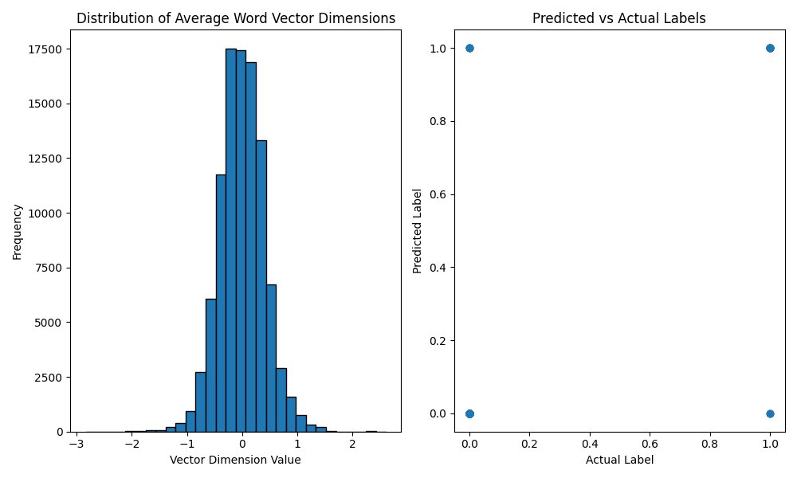

Example Projects
Project 1 - Email Classification whether it's spam or not.
- (Using Average Word2Vec, NLTK & Logistic Regression )
- Dataset taken from kaggle (emails.csv)
import pandas as pd
import re
from nltk.corpus import stopwords
from nltk.tokenize import word_tokenize
from gensim.models import Word2Vec
from sklearn.model_selection import train_test_split
from sklearn.linear_model import LogisticRegression
from sklearn.metrics import accuracy_score
import numpy as np
import matplotlib.pyplot as plt
# Load dataset
data = pd.read_csv('emails.csv')
# Sample the data to speed up processing
data = data.sample(n=1000, random_state=42)
# Print initial shape and check for null values
print(f'Initial Data Shape: {data.shape}')
print(f'Null Values in Data: {data.isnull().sum()}')
# Define the text preprocessing function
def preprocess_text(text):
text = text.lower() # Convert to lowercase
text = re.sub(r'[^\w\s]', '', text) # Remove punctuation
words = word_tokenize(text) # Tokenize the text
words = [word for word in words if word not in stopwords.words('english')] # Remove stopwords
return words
# Apply preprocessing to the text
data['processed_text'] = data['text'].apply(preprocess_text)
# Print the first few rows after preprocessing
print('\nFirst Few Rows After Preprocessing:')
print(data[['text', 'processed_text']].head())
# Train Word2Vec model
sentences = data['processed_text'].tolist()
w2v_model = Word2Vec(sentences, vector_size=100, window=5, min_count=1)
# Print information about the Word2Vec model
print(f'\nWord2Vec Model Vocabulary Size: {len(w2v_model.wv)}')
# Define function to calculate average word vectors
def avg_word2vec(words, model, num_features):
feature_vec = np.zeros((num_features,), dtype='float32')
num_words = 0
for word in words:
if word in model.wv:
num_words += 1
feature_vec = np.add(feature_vec, model.wv[word])
if num_words > 0:
feature_vec = np.divide(feature_vec, num_words)
return feature_vec
# Calculate average word vectors for each document
data['avg_vector'] = data['processed_text'].apply(lambda x: avg_word2vec(x, w2v_model, 100))
# Print the first few rows with average vectors
print('\nFirst Few Rows with Average Word Vectors:')
print(data[['processed_text', 'avg_vector']].head())
# Convert 'avg_vector' column to a DataFrame and then to a NumPy array
X = pd.DataFrame(data['avg_vector'].tolist()).to_numpy()
y = data['spam']
# Print shapes of feature matrix and target variable
print(f'\nFeature Matrix Shape: {X.shape}')
print(f'Target Variable Shape: {y.shape}')
# Split data into training and testing sets
X_train, X_test, y_train, y_test = train_test_split(X, y, test_size=0.2, random_state=42)
# Print shapes of training and testing sets
print(f'\nTraining Feature Matrix Shape: {X_train.shape}')
print(f'Testing Feature Matrix Shape: {X_test.shape}')
print(f'Training Target Variable Shape: {y_train.shape}')
print(f'Testing Target Variable Shape: {y_test.shape}')
# Train a Logistic Regression model
model = LogisticRegression(max_iter=1000)
model.fit(X_train, y_train)
# Predict on the test set
y_pred = model.predict(X_test)
# Evaluate the model
accuracy = accuracy_score(y_test, y_pred)
print(f'\nAccuracy: {accuracy}')
# Visualization
plt.figure(figsize=(10, 6))
# Plot distribution of average word vector dimensions
plt.subplot(1, 2, 1)
plt.title('Distribution of Average Word Vector Dimensions')
plt.hist(X.flatten(), bins=30, edgecolor='k')
plt.xlabel('Vector Dimension Value')
plt.ylabel('Frequency')
# Plot a sample of predicted vs. actual labels
plt.subplot(1, 2, 2)
plt.title('Predicted vs Actual Labels')
plt.scatter(y_test, y_pred, alpha=0.5)
plt.xlabel('Actual Label')
plt.ylabel('Predicted Label')
plt.tight_layout()
plt.show()

output:
$ python email-classification2.py
Initial Data Shape: (1000, 2)
Null Values in Data: text 0
spam 0
dtype: int64
First Few Rows After Preprocessing:
text processed_text
4445 Subject: re : energy derivatives conference - ... [subject, energy, derivatives, conference, may...
4118 Subject: financial maths course , part 2 vinc... [subject, financial, maths, course, part, 2, v...
3893 Subject: re : bullet points please respond to... [subject, bullet, points, please, respond, hi,...
4210 Subject: re : enron default swaps darrell , ... [subject, enron, default, swaps, darrell, send...
5603 Subject: re : power question steve , elena c... [subject, power, question, steve, elena, chilk...
Word2Vec Model Vocabulary Size: 15317
First Few Rows with Average Word Vectors:
processed_text avg_vector
4445 [subject, energy, derivatives, conference, may... [-0.23322825, 0.2750046, -0.4309876, -0.307644...
4118 [subject, financial, maths, course, part, 2, v... [-0.24642478, 0.28744048, -0.40274242, -0.2679...
3893 [subject, bullet, points, please, respond, hi,... [-0.025931308, 0.34718484, -0.48855108, -0.495...
4210 [subject, enron, default, swaps, darrell, send... [-0.19965315, 0.27539662, -0.38174188, -0.2247...
5603 [subject, power, question, steve, elena, chilk... [-0.20673649, 0.3041527, -0.49089968, -0.42844...
Feature Matrix Shape: (1000, 100)
Target Variable Shape: (1000,)
Training Feature Matrix Shape: (800, 100)
Testing Feature Matrix Shape: (200, 100)
Training Target Variable Shape: (800,)
Testing Target Variable Shape: (200,)
Accuracy: 0.905
Project 2 - Tweet Sentiment Analysis
- (Using Spacy and LogisticRegression)
- Dataset taken from kaggle (sentiment.csv)
import pandas as pd
import re
import spacy
from sklearn.model_selection import train_test_split
from sklearn.feature_extraction.text import TfidfVectorizer
from sklearn.linear_model import LogisticRegression
from sklearn.metrics import classification_report, confusion_matrix, roc_curve, auc
import seaborn as sns
import matplotlib.pyplot as plt
# Load spaCy's English model
nlp = spacy.load('en_core_web_sm')
# Load the dataset
DATASET_COLUMNS = ['target', 'ids', 'date', 'flag', 'user', 'text']
DATASET_ENCODING = "ISO-8859-1"
df = pd.read_csv('sentiment.csv', encoding=DATASET_ENCODING, names=DATASET_COLUMNS, header=None)
print("Dataset columns:", df.columns)
# Function to clean text using spaCy
def clean_text(text):
doc = nlp(text.lower()) # Convert to lowercase and process with spaCy
# Lemmatize, remove stopwords and punctuation
tokens = [token.lemma_ for token in doc if not token.is_stop and not token.is_punct]
return " ".join(tokens)
# Preprocess the text data
df['text'] = df['text'].apply(clean_text)
# Replace target values (4 becomes 1 for binary classification)
df['target'] = df['target'].replace(4, 1)
# Split the dataset into training and testing sets
X_train, X_test, y_train, y_test = train_test_split(df['text'], df['target'], test_size=0.2, random_state=42)
# Initialize the TfidfVectorizer
vectorizer = TfidfVectorizer(max_features=500000, ngram_range=(1, 2))
# Fit and transform the training data
X_train_vect = vectorizer.fit_transform(X_train)
# Transform the testing data
X_test_vect = vectorizer.transform(X_test)
# Define the model evaluation function
def evaluate_model(model):
model.fit(X_train_vect, y_train)
y_pred = model.predict(X_test_vect)
print("Classification Report:")
print(classification_report(y_test, y_pred))
# Confusion Matrix
cm = confusion_matrix(y_test, y_pred)
sns.heatmap(cm, annot=True, fmt='d', cmap='Blues')
plt.xlabel('Predicted')
plt.ylabel('Actual')
plt.title('Confusion Matrix')
plt.show()
# Train and evaluate the Logistic Regression model
lr_model = LogisticRegression(C=2, max_iter=1000, n_jobs=-1)
evaluate_model(lr_model)
# Eg test tweet
test_tweet = ["I just love this new idea! Proud of your decision. It's too good."]
# Clean and transform the test tweet
test_tweet = [clean_text(test_tweet[0])]
vectorized_tweet = vectorizer.transform(test_tweet)
# Predict the sentiment
predicted_sentiment = lr_model.predict(vectorized_tweet)
# Output:
print(f"Predicted Sentiment: {'Positive' if predicted_sentiment[0] == 1 else 'Negative'}")